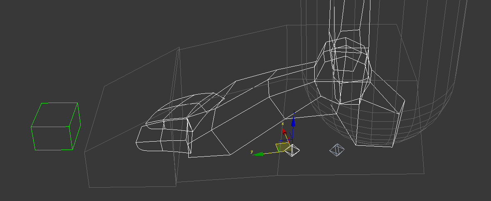
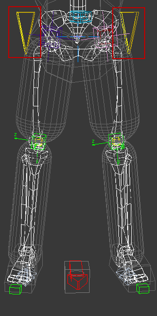
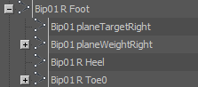
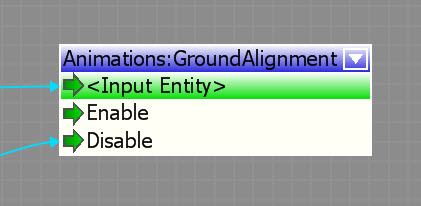

Обзор
CRYENGINE может автоматически регулировать ноги и ступни персонажа в соответствии с поверхностью местности или земли, на которой он стоит.
Это включает в себя выравнивание ступни по направлению склона, а также регулировку ноги на разной высоте.

Настройка в CRYENGINE 3.0.x-3.4.x
Анимированный персонаж должен использоваться для выравнивания по земле и ступни/ноги IK для функционирования. Это означает, что простые объекты, такие как объект animobj и другие, не будут использовать эту функцию. Персонаж должен быть живым анимированным персонажем, чего можно добиться с помощью класса игрока по умолчанию или классов по умолчанию AI, таких как человек.
Чтобы groundAlignment работал, скелет персонажа должен иметь определенные кости и имена. Эту настройку необходимо выполнить в настройках персонажа. .chrparams файл. В файл необходимо добавить настройки для обеих ног:
<LimbIK_Definition>
<IK EndEffector="Bip01 R Foot" Handle="RgtLeg01" Root="Bip01 R Thigh" Solver="2BIK"/>
<IK EndEffector="Bip01 L Foot" Handle="LftLeg01" Root="Bip01 L Thigh" Solver="2BIK"/>
</LimbIK_Definition>
Чтобы найти поверхность под ногами персонажа, лучи испускаются из места над его пяточной костью, чтобы найти столкновение с поверхностью. Стопа также прилегает к поверхности. Скелет персонажа должен содержать следующие кости:
- Бип01 Л Теленка
- Bip01 R икра
- Bip01 L каблук
- Bip01 R каблук
- Bip01 L Нога
- Bip01 R стопа
- Bip01 L Toe0
- Bip01 R Toe0
Настройка в 3.5.x
Как и в предыдущих версиях движка, если вы хотите получить адаптацию, необходимо использовать классы анимированных персонажей; использование объекта animobj или чего-то подобного не будет работать.
В версии 3.5 необходимо соблюдать несколько менее конкретных соглашений об именах, однако настройка аналогична версии 3.4.
1. Установите необходимые соглашения об именах, написанные на C++, в функции InitializePoseAlignerBipedHuman.
- Бип01 Таз
- Бип01 planeTargetLeft
- Бип01 planeWeightLeft
- Бип01 planeTargetRight
- Бип01 planeWeightRight
2. Определите суставы, которые будут затронуты, в .chrparams. файл.
<LimbIK_Definition>
<IK EndEffector="Right_Foot" Handle="RgtLeg01" Root="Right_Thigh" Solver="2BIK"/>
<IK EndEffector="Left_Foot" Handle="LftLeg01" Root="Left_Thigh" Solver="2BIK"/>
</LimbIK_Definition>
3. Настройка костей Bip01 PlaneTarget и PlaneWeight.
Плоская цель и плоские весовые кости настраиваются в буровой установке, чтобы дать системе абсолютный предел смещения. Выравнивание позы заставляет целевой узел плоскости выравниваться по узлу веса плоскости и не более того.
- Bip01 planeWeightLeft (Эта кость должна быть дочерней костью стопы и иметь то же расположение X, Y, что и стопа, но примерно на 100 см выше кости стопы)
- Bip01 planeTargetLeft (Эта кость должна быть одинаковой по X и Y, но выровнена по 0 по Z, а также быть дочерней по отношению к ступне)
- Bip01 planeWeightRight (Эта кость должна быть дочерней к стопе и находиться в том же месте X, Y, но примерно на 100 см выше стопы по Z)
- Bip01 planeTargetRight (Эта кость должна быть одинаковой по X и Y, но выровнена по 0 по Z, а также быть дочерней по отношению к ступне)
  
Плоский целевой узел в центре стопы
Узел веса плоскости выровнен по тазу по Z, нулю по Y и над ступней по X.
Экран настройки иерархии
4. Отладка
Вот несколько очень полезных переменных консоли, позволяющих увидеть, что выравниватель позы активен:
- a_poseAlignerEnable = 1 - Включает выравниватель позы
- a_poseAlignerDebugDraw = 1 Включает отладочное рисование веса плоскости, целевых и корневых смещений.
- a_poseAlignerForceWeightOne = 1 Устанавливает вес равным 1, что заставляет конечность всегда подстраиваться.

Использование GroundAlignment (3.0.x-3.4.x)
GroundAlignment в игре
CVar-контроль
Используйте ca_groundAlignment, чтобы включать и выключать автоматическое выравнивание по земле для всех персонажей по всему миру. По умолчанию это значение установлено на 1, что означает, что оно активно.
Flow Graph Узел
Узел Flow Graph Анимации::GroundAlignment можно использовать для включения или отключения этой функции во время игры.
Это дает дизайнерам возможность включать и выключать выравнивание по земле для отдельных персонажей во время выполнения.

Код
Как и описанный выше узел Flow Graph, эту функцию также можно отключить/включить для отдельных символов во время выполнения с помощью кода.
Функция интерфейса объявлена в ISkeletonPose:
SkeletonPose::
virtual void EnableFootGroundAlignment(bool enable);
Чтобы активировать или деактивировать выравнивание из реализации актера или игрока в dll игры, используйте этот код:
GetEntity()->GetCharacter(0)->GetISkeletonPose()->EnableFootGroundAlignment(true);